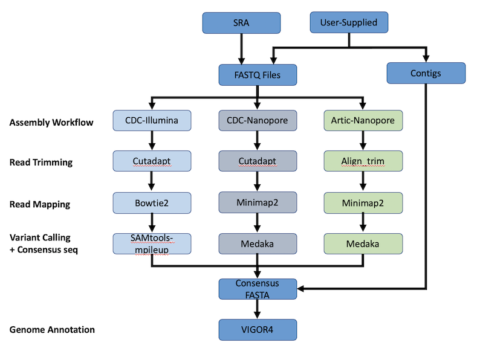
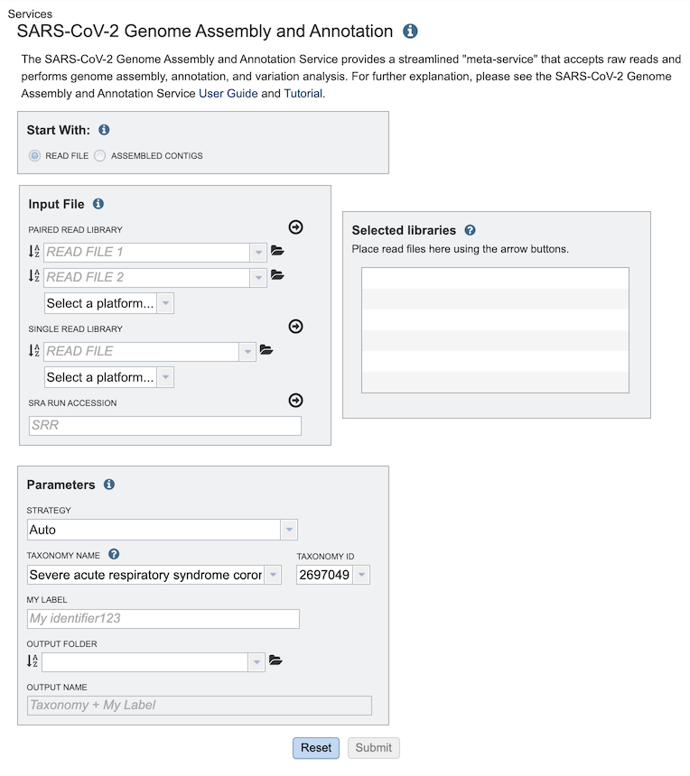
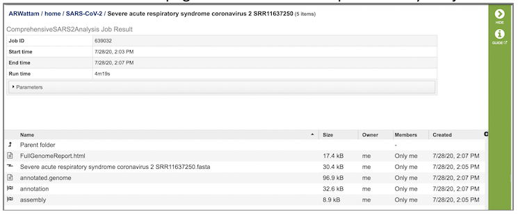

SARS-CoV-2 Genome Assembly and Annotation Service¶
Overview¶
The SARS-CoV-2 Genome Assembly and Annotation Service provides a streamlined “meta-service” that accepts raw reads and performs genome assembly, annotation, and variation analysis for SARS-CoV-2 genome reads. The figure below provides an overview of the workflows of the service.

Using the SARS-CoV-2 Genome Assembly and Annotation Service¶
Note: You must be logged in to use this service.
Options¶

Start with¶
The service can accept either read files or assembled contigs. If the “Read Files” option is selected, the Assembly Service will be invoked automatically to assemble the reads into contigs before invoking the Annotation Service. If the “Assembled Contigs” option is chosen, the Annotation Service will automatically be invoked, bypassing the Assembly Service.
Read Input File¶
Depending on the option chosen above (Read File or Assembled Contigs), the Input File section will request read files or assembled contigs, respectively.
Paired read library¶
Read File 1 & 2: Many paired read libraries are given as file pairs, with each file containing half of each read pair. Paired read files are expected to be sorted such that each read in a pair occurs in the same Nth position as its mate in their respective files. These files are specified as READ FILE 1 and READ FILE 2. For a given file pair, the selection of which file is READ 1 and which is READ 2 does not matter.
Single read library¶
Read File: The fastq file containing the reads.
SRA run accession¶
Allows direct upload of read files from the NCBI Sequence Read Archive to the Assembly Service. Entering the SRR accession number and clicking the arrow will add the file to the selected libraries box for use in the assembly.
Selected libraries¶
Read files placed here will contribute to a single assembly.
Parameters¶
Strategy¶
auto: Uses CDC-Illumina or CDC-Nanopore protocol based on the type of reads provided (see below).
CDC-Illumina: Implements CDC-prescribed assembly protocol for SARS-CoV-2 genome sequences for Illumina-generated sequences.
CDC-Nanopore: Implements CDC-prescribed assembly protocol for SARS-CoV-2 genome sequences for Nanopore-generated sequences.
ARTIC-Nanopore: Implements the ARTICnetwork-prescribed protocol for nCoV-19 genome sequences for Nanopore-generated sequences.
Taxonomy ID¶
Pre-populated with the appropriate taxonomy ID for SARS-CoV-2.
My Label¶
User-provided name to uniquely identify the results.
Output Folder¶
User-selected workspace folder where results will be placed.
Output Name¶
Auto-generated name for the results (Taxonomy Name + My Label)
Taxonomy Name¶
Pre-populated with the appropriate taxonomy name for SARS-CoV-2.
Output Results¶

The SARS-CoV-2 Genome Assembly and Annotation Service generates several files that are deposited in the Private Workspace in the designated Output Folder. These include
FullGenomeReport.html - A web-browser-viewable report that summarizes the results of the service including
Assembly statistics
Assembly coverage depth graph
Variation data, including contig, SNP position, reference genome nucleotide, submitted genome nucleotide
Annotation summary with table of called features including ID, start position, strand, length, and function for each
(output name).fasta - Annotated genome in FASTA format
annotated.genome - A JSON-format file encapsulating all the data from the annotated genome
annotation - Job output from the annotion portion of the service. Provides a collection of output files:
annotation.feature_dna.fasta - DNA sequence for each feature called by the annotation pipeline
annotation.feature_protein.fasta - amino sequence for each gene called by the annotation pipeline
annotation.features - list of the features, location on contig, type, function, any known alias, and (for protein-coding genes) the protein MD5 checksum
annotation.gb - annotation in GenBank format
annotation.gff - features of the genome in a General Feature Format
merged.gb - all of the contigs merged into a single locus instead of being separate locus objects; can be used in Artemis
annotation.tar.gz - tar ball file containing all files
annotation.txt - all information on the called features, including the nucleotide and amino acid sequences, in text file format
annotation.xls - all information on the called features, including the nucleotide and amino acid sequences, in Excel format
vigor4.stderr.txt - standard errors that result from the VIGOR4 annotation pipeline
vigor4.stdout.txt - output of the VIGOR4 annotation pipeline at each step in the process
vigor_out-20200729-135437.ini - VIGOR4 settings that were used to compute that annotation
vigor.out.aln file - alignment of predicted protein to reference, and from the reference protein to genome
vigor_out.cds - FASTA-format file of predicted CDSs
vigor_out.gff3 - predicted features in GFF3 format
vigor_out.rpt - summary results from the annotation program
vigor_out.pep - EMBL-format file of the predicted proteins
vigor_out.tbl - predicted features in GenBank table format
vigor_out.warnings - any warnings produced by the VIGOR4 pipeline during annotation
assembly - Job output from the assembly portion of the service. Provides a collection of output files:
assembly-details.json - information about the assembly in JSON-format
assembly.bam - a Binary Alignment Map (BAM) containing comprehensive raw data of genome sequencing
assembly.bam.bai - BAM index file
assembly.depth - depth of support based on the reads at each position in the assembly
assembly.fasta - nucleotide sequence of the contig
assembly.png - graph that shows the coverage depth for the assembly at the specific positions in the genome, also shown in the Full Genome Report
vc.gz and vcfgz.tbi - Variant Call Format (VCF) specification VCF, a (compressed) text file containing meta-information lines, a header line, and then data lines each containing information about a position in the genome; can contain genotype information on samples for each position
References¶
Etherington, G.J., R.H. Ramirez-Gonzalez, and D. MacLean, bio-samtools 2: a package for analysis and visualization of sequence and alignment data with SAMtools in Ruby. Bioinformatics, 2015. 31(15): p. 2565-2567.
Langmead, B. and S. Salzberg, Langmead. 2013. Bowtie2. Nature Methods, 2013. 9: p. 357-359.
Li, H., Minimap2: pairwise alignment for nucleotide sequences. Bioinformatics, 2018. 34(18): p. 3094-3100.
Martin, M., Cutadapt removes adapter sequences from high-throughput sequencing reads. EMBnet. journal, 2011. 17(1): p. 10-12.